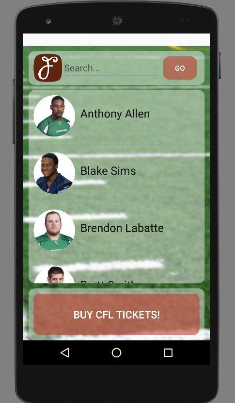
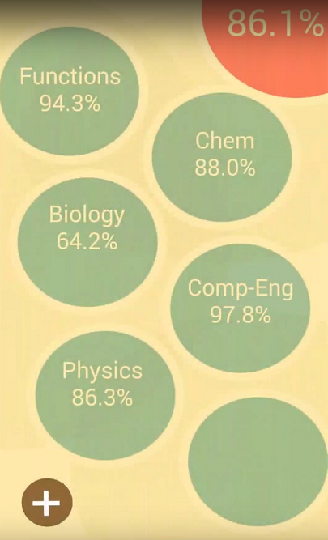
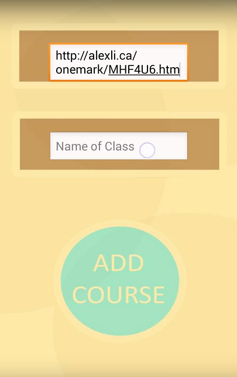

MISCELLANEOUS
Fuudi
 GitHub
GitHub
Fuudi is an Android application that serves as a fantasy football manager. Developed for the CFL during SportsHack2016.
Not official application nor otherwise affiliated with the CFL.
Fuudi is a fantasy football buddy, or an information consolidation application that helps CFL fantasy football players get more knowledge of their lineups and players. By listing information about the players such as height, position, status updates, injury reports, and trade rumors, owners of players in fantasy leagues can gain a competitive edge against their competition.
Fuudi offers owners a list of Players of Interest, for quick access to key players. It also offers advanced information regarding players, their stats, and positions. Statistical analysis performed on metrics found on BigDataUniversity are also analyzed and shown to the user. Live twitter updates can keep the user informed about how the player is doing, and whatever good or bad play that they may have just made. Trade rumors and injury reports help owners to set their lineups or make quick decisions about players on the go.
In helping create Fuudi, I learned about Android Development using Android Studio, Data Science, and familiarized myself with the Twitter API.
Fuudi was created in collaboration with three other developers, William , Justin, and Adit.
Not official application nor otherwise affiliated with the CFL.
Fuudi is a fantasy football buddy, or an information consolidation application that helps CFL fantasy football players get more knowledge of their lineups and players. By listing information about the players such as height, position, status updates, injury reports, and trade rumors, owners of players in fantasy leagues can gain a competitive edge against their competition.
Fuudi offers owners a list of Players of Interest, for quick access to key players. It also offers advanced information regarding players, their stats, and positions. Statistical analysis performed on metrics found on BigDataUniversity are also analyzed and shown to the user. Live twitter updates can keep the user informed about how the player is doing, and whatever good or bad play that they may have just made. Trade rumors and injury reports help owners to set their lineups or make quick decisions about players on the go.
In helping create Fuudi, I learned about Android Development using Android Studio, Data Science, and familiarized myself with the Twitter API.
Fuudi was created in collaboration with three other developers, William , Justin, and Adit.

Easy to use Android Application

Follow players of interest

Detailed Player stats and profiles

Twitter Player Trends
PokéTbase
 GitHub
GitHub
PokéTbase allows competitive pokemon players to cross reference an opponents team with known teams compositions in online forums. Requires PyQt4 to run.
Not an official application nor otherwise affiliated with Pokémon.
In the world of competitive Pokémon, team battles have become extremely tactical - different Pokémon have move=sets that synergize well with each other, leading up to potentially deadly combinations. With PokéTBase, you can cross-reference your own team, or your enemy's team to see what the internet has to say about their team composition. By knowing one's opponent's win conditions and playstyles, trainers will be more prepared to face different and unorthodox teams.
PokéTBase takes a team-set, which is a group of Pokémon that comprise a team. It crawls the web's popular online Pokémon forums for similar teams, and displays the discussion among users about the strengths and weaknesses of the team, as well as the move-sets (abilities) and tactics employed by the team. For example, one team may seek to buff their stats to ridiculous amounts and then use one strong Pokémon to sweep the team, while others may use control-based tactics such as paralysis or sleep. By giving the user access to players who may have previously played against/with these team-sets, the user gains a competitive edge to possibly beating their competition.
In helping create PokéTBase, I learned about Python Applications, GUI, and working with PyQT.
PokéTBase was created in collaboration with another developer, William.
Not an official application nor otherwise affiliated with Pokémon.
In the world of competitive Pokémon, team battles have become extremely tactical - different Pokémon have move=sets that synergize well with each other, leading up to potentially deadly combinations. With PokéTBase, you can cross-reference your own team, or your enemy's team to see what the internet has to say about their team composition. By knowing one's opponent's win conditions and playstyles, trainers will be more prepared to face different and unorthodox teams.
PokéTBase takes a team-set, which is a group of Pokémon that comprise a team. It crawls the web's popular online Pokémon forums for similar teams, and displays the discussion among users about the strengths and weaknesses of the team, as well as the move-sets (abilities) and tactics employed by the team. For example, one team may seek to buff their stats to ridiculous amounts and then use one strong Pokémon to sweep the team, while others may use control-based tactics such as paralysis or sleep. By giving the user access to players who may have previously played against/with these team-sets, the user gains a competitive edge to possibly beating their competition.
In helping create PokéTBase, I learned about Python Applications, GUI, and working with PyQT.
PokéTBase was created in collaboration with another developer, William.

Team Comp Research 1/2

Team Comp Research 2/2

No Results Found

Dropdown Menu of All Pokemon
OneMark is an Android application that consolidates academic marks developed for the TDSB during EdAppHack2014.
Not an official application nor otherwise affiliated with the TDSB.
OneMark is a mark consolidation application that allows students to track their academic progress at a glance. By pulling information from various sources such as BlackBoard and other teacher's personal websites, OneMark is able to effectively parse and display the academic information of students in one easy to access place. It also gives a calculated average, and has an in-built calculator that tells students what marks they need to achieve to receive a set average. By providing the user with these tools, it makes it easier than ever for students to track their academic progress!
OneMark provides a detailed analysis of the marks, offering mark breakdowns by weight and mark of each project/test. It also plots a chart to show users the increases or decreases in their mark over time. Adding a new course is simple - just click the + button and add the URL of the class marks page, as well as a name for the course.
In helping create OneMark, I learned about Android Development using Android Studio, parsing web input, and developing analytical tools.
Fuudi was created in collaboration with three other developers, Vanshil , Tristan, Brandon, Alex, and Gabe.
Not an official application nor otherwise affiliated with the TDSB.
OneMark is a mark consolidation application that allows students to track their academic progress at a glance. By pulling information from various sources such as BlackBoard and other teacher's personal websites, OneMark is able to effectively parse and display the academic information of students in one easy to access place. It also gives a calculated average, and has an in-built calculator that tells students what marks they need to achieve to receive a set average. By providing the user with these tools, it makes it easier than ever for students to track their academic progress!
OneMark provides a detailed analysis of the marks, offering mark breakdowns by weight and mark of each project/test. It also plots a chart to show users the increases or decreases in their mark over time. Adding a new course is simple - just click the + button and add the URL of the class marks page, as well as a name for the course.
In helping create OneMark, I learned about Android Development using Android Studio, parsing web input, and developing analytical tools.
Fuudi was created in collaboration with three other developers, Vanshil , Tristan, Brandon, Alex, and Gabe.

OneMark Loading Screen

Classes Overview and Averages

Add Classes

Track Academic Performance
×